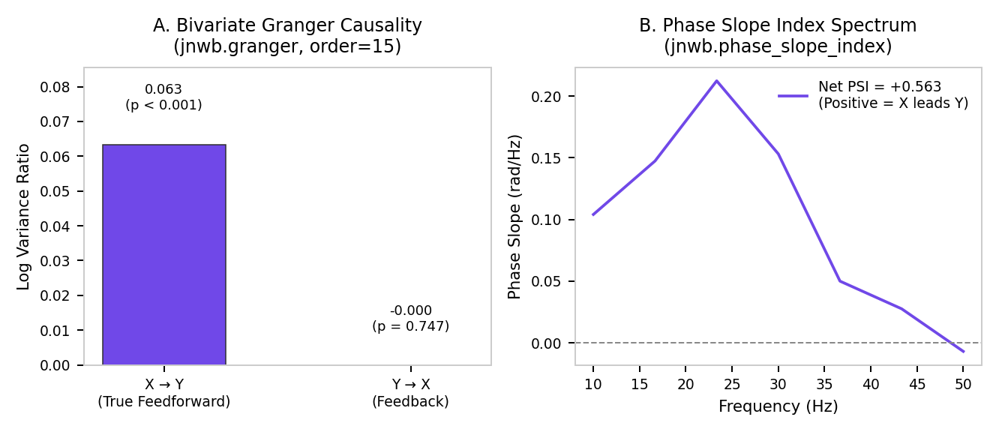

08. Directed Connectivity, Information Dynamics & Network Topology¶
This document details directed functional and effective connectivity, spectral Granger causality, Phase Slope Index (PSI), Transfer Entropy (TE), spike mutual information, and network graph topology in jnwb.
1. Overview & Directed Invariants¶
jnwb.connectivity provides estimators for directed interaction between continuous time series (LFP, EEG) and point processes (spike trains).
graph LR
Sig[Multi-Channel Continuous / Spike Data] --> Granger[Granger / Spectral Granger]
Sig --> PSI[Phase Slope Index]
Sig --> TE[Transfer Entropy]
Sig --> MI[Spike Mutual Information]
Granger --> Net[Directed Network & Graph Topology]
PSI --> Net
TE --> Net
Invariant: Statistical Predictability vs. Physical Causality¶
$\(\text{Association} \neq \text{Directionality} \neq \text{Causality}\)$
Granger causality, Phase Slope Index, and Transfer Entropy establish statistical predictability / lag asymmetry in observed time series. jnwb distinguishes statistical directed metrics from perturbational physical causality.
2. Granger Causality & Spectral Granger (granger, granger_spectral, granger_causality)¶
Bivariate & Multivariate Time-Domain Granger¶
import jnwb
# X, Y: continuous 1D or trial-segmented arrays
result = jnwb.granger(
X, Y,
order="auto", # Order selection via AIC/BIC
max_lag=20,
criterion="bic",
n_surrogates=200, # Time-shift null distribution
seed=0
)
# Returns a DirectedResult object
print(f"F-statistic: {result.statistic:.4f}, p-value: {result.pvalue:.4f}")
print(f"Net Directionality (X->Y vs Y->X): {result.net_direction}")
Spectral Granger Causality (granger_spectral)¶
Decomposes Granger causality into specific frequency bands:
spectral_res = jnwb.granger_spectral(
X, Y,
fs=1000.0,
bands=jnwb.CANONICAL_BANDS,
n_freqs=256,
n_surrogates=100
)
# Returns frequency-resolved causality spectra and band summaries
3. Phase Slope Index (phase_slope_index)¶
The Phase Slope Index (PSI) estimates directed coupling from the slope of the cross-spectral phase over frequency bands, robust against instantaneous volume conduction:
psi_res = jnwb.phase_slope_index(
X, Y,
fs=1000.0,
bands={"beta": (14.0, 30.0), "gamma": (30.0, 80.0)},
jackknife=True,
n_surrogates=200
)
print("PSI normalized value:", psi_res.statistic)

4. Transfer Entropy (transfer_entropy)¶
Non-parametric, model-free information-theoretic directed coupling measuring reduction in uncertainty of \(Y\) given past values of \(X\):
te_res = jnwb.transfer_entropy(
X, Y,
k=1, l=1, delay=1,
estimator="quantile", # "quantile", "symbolic", or "kraskov"
bins=4,
n_surrogates=200
)
5. Spike Mutual Information (spike_mutual_information, spike_count_mutual_information)¶
Estimates mutual information between spike trains:
# Binary occupancy mutual information
mi_bin = jnwb.spike_mutual_information(
spike_times1, spike_times2,
time_window=(0.0, 1.0),
bin_size_ms=10.0,
estimator="binary_occupancy"
)
# Spike count mutual information
mi_count = jnwb.spike_count_mutual_information(
spike_times1, spike_times2,
time_window=(0.0, 1.0),
bin_size_ms=10.0
)
6. All-to-All Directed Networks & Graph Topology¶
Network Matrix Computation (directed_connectivity, directed_network)¶
# Compute pairwise connectivity matrix across N channels
conn_matrix = jnwb.directed_connectivity(
data_matrix, # (n_channels, n_timepoints)
method="granger", # "granger", "psi", or "transfer_entropy"
fs=1000.0
)
# Build graph representation with surrogate thresholding
network = jnwb.directed_network(conn_matrix, alpha=0.01)
Graph Topology Metrics (network_topology)¶
Computes node degree, out-degree/in-degree ratios, clustering coefficients, and hub centrality:
topo = jnwb.network_topology(adjacency_matrix=network.adjacency, threshold=0.3)
print("Node in-degrees:", topo["in_degree"])
print("Node out-degrees:", topo["out_degree"])
print("Network density:", topo["density"])